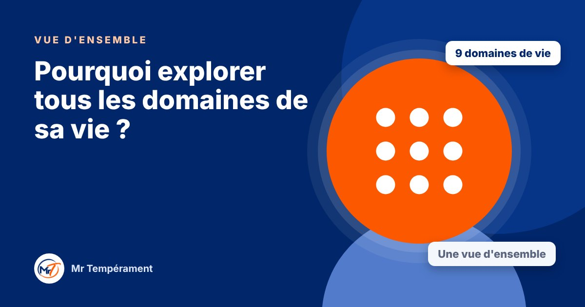

Pourquoi explorer tous les domaines de sa vie ?

Votre tempérament vous suit partout, mais il ne s'exprime pas de la même façon à chaque endroit.
On se connaît souvent bien dans un domaine : au travail, en couple, avec ses enfants. Mais on ne voit pas toujours le tableau complet. Or c'est le tableau complet qui révèle les vrais leviers.
Neuf domaines, trois grands ensembles
Nous regardons la vie en trois grands ensembles. Les Relations : couple, parentalité, relations sociales. L'Impact : travail, leadership, entrepreneuriat. La Gestion des Ressources : finances, temps, énergie. Ensemble, ils couvrent une grande partie de ce qui compose votre quotidien.
Ce que révèle la vue d'ensemble
En comparant vos résultats d'un domaine à l'autre, vous repérez ce qui revient partout, votre fil rouge, et ce qui varie. Vous voyez où vous êtes le plus affirmé(e), où vous vous adaptez, et où votre point faible se répète. Ce sont des informations que l'on ne voit pas en regardant un seul domaine.
Avancer à votre rythme
Explorer neuf domaines demande du temps. C'est pourquoi on peut le faire en plusieurs fois, et sauter ceux que l'on a déjà explorés. Vous gardez le contrôle du rythme, et vous obtenez à la fin un rapport complet.
Pour aller plus loin
Le Bilan DISC 360° explore votre tempérament dans les 9 domaines de votre vie, avec une vue d'ensemble, votre profil global et trois synthèses.
Découvrir le Bilan DISC 360°Faire le test gratuit